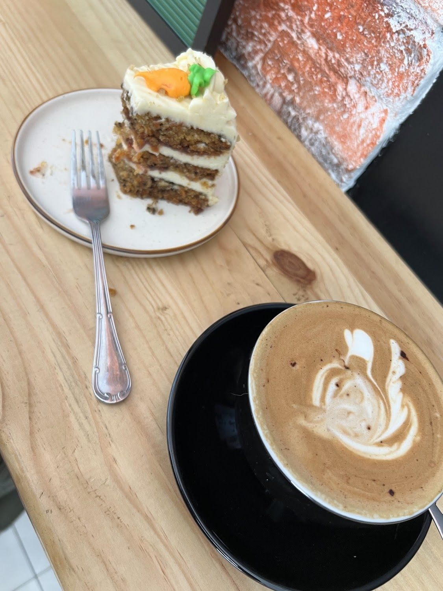
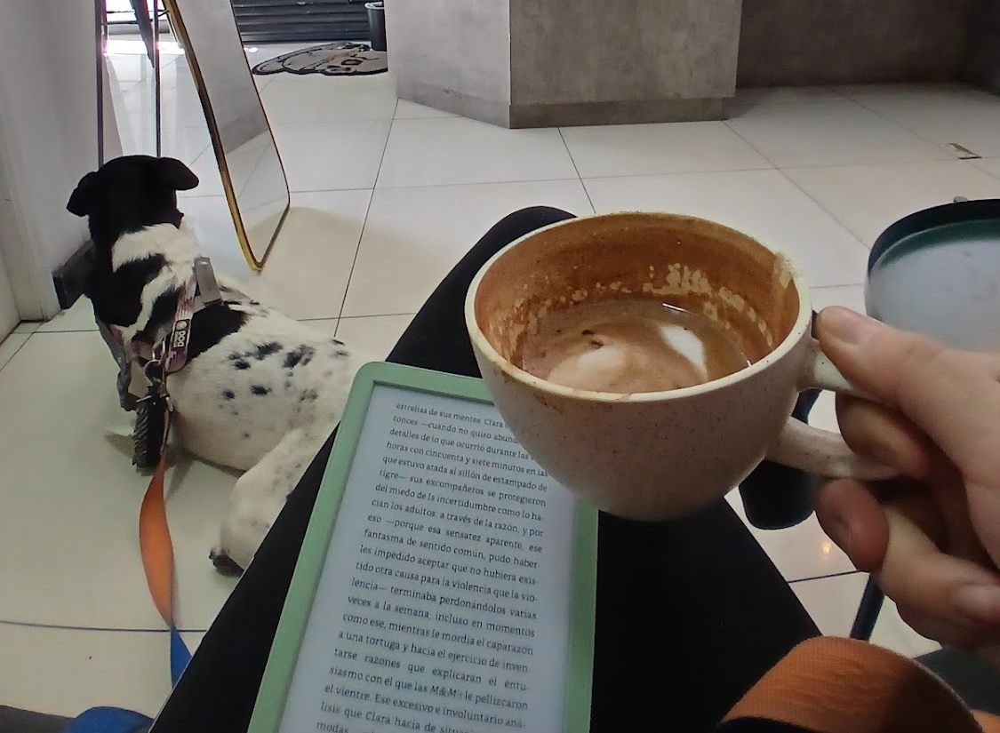
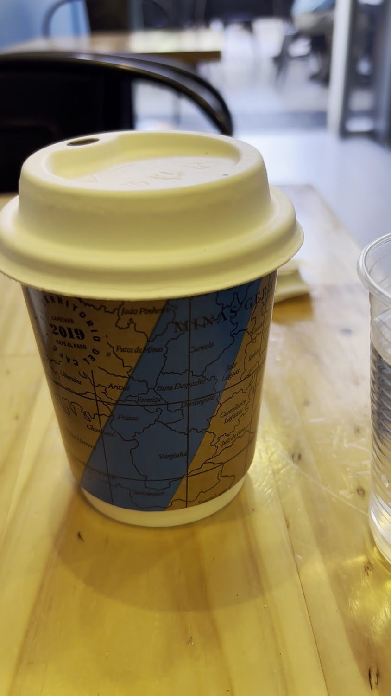
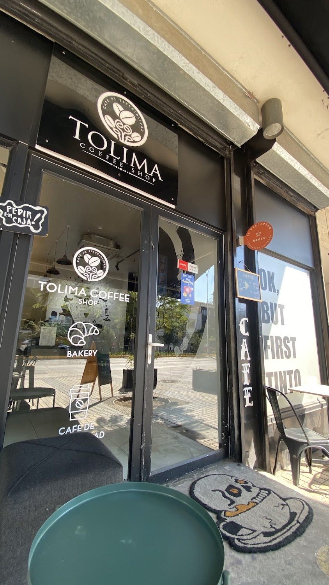
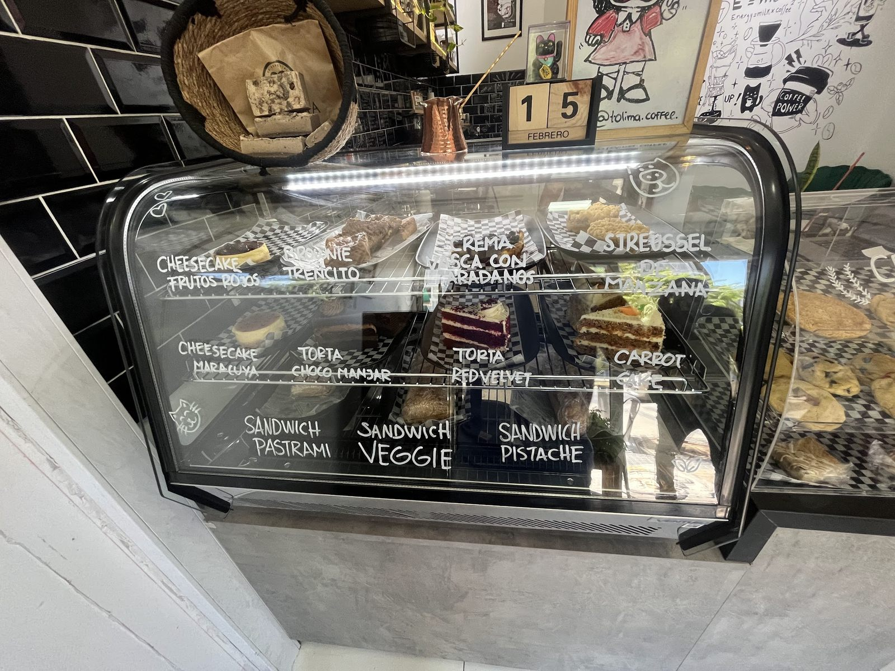
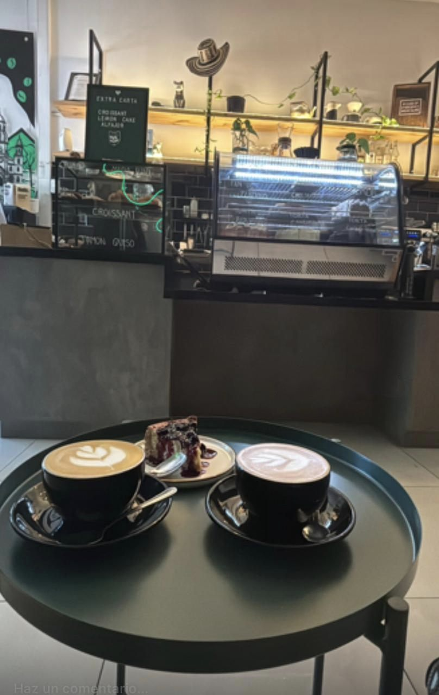
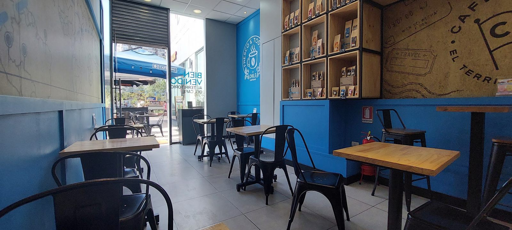
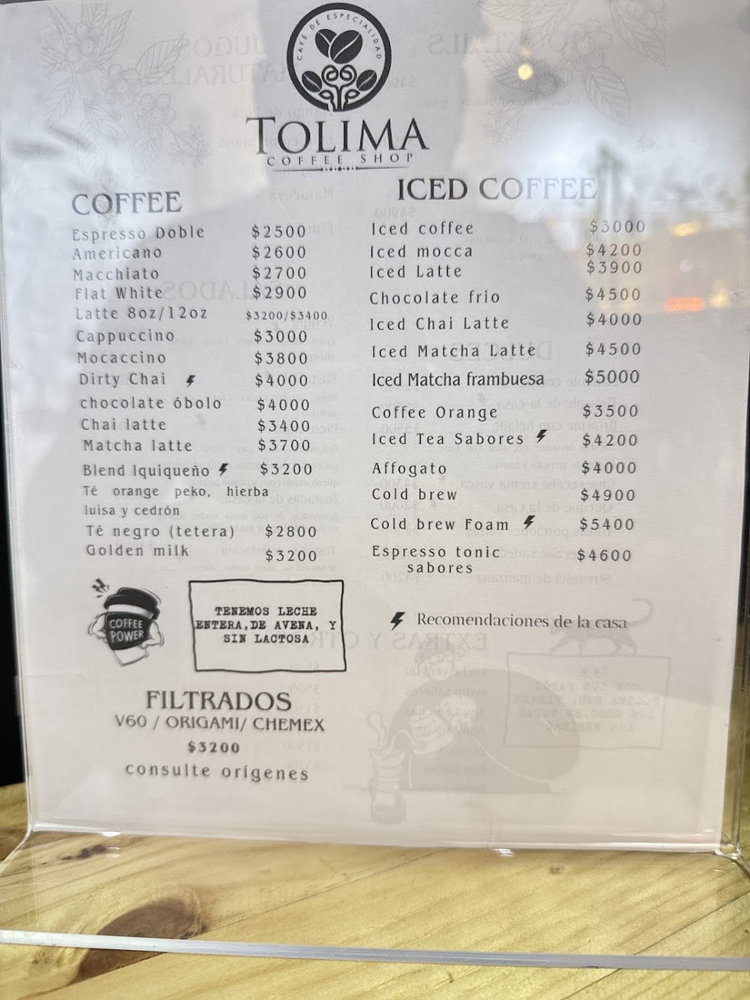
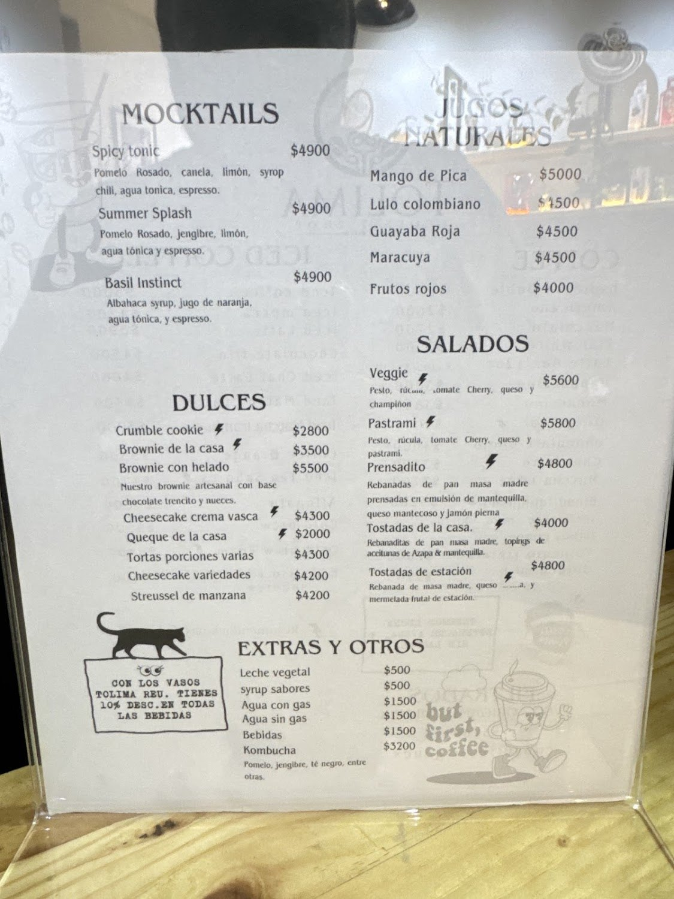

Trae tu vaso y pagas menos
Está escrito en su propia carta: con los vasos Tolima reutilizables tienes 10% de descuento en todas las bebidas.
Ver la carta →Av. Irarrázaval 1989, local 1 · Ñuñoa
No lo escribimos nosotros: lo escribió alguien que se hospedó tres semanas en el Airbnb de enfrente. Café de especialidad, filtrados en V60, origami y chemex, tortas de la casa y sándwiches en masa madre.
Martes a viernes de 10:30 a 15:00 y de 16:00 a 20:00

Está escrito en su propia carta: con los vasos Tolima reutilizables tienes 10% de descuento en todas las bebidas.
Ver la carta →“Lo mejor, abierto el día domingo”, dice una de sus reseñas. En Ñuñoa eso no es obvio.
Ver el horario →Lulo colombiano y mango de Pica, blend iquiqueño y aceitunas de Azapa. Dos rutas en la misma carta.
Conocer el local →Nosotros
Es la primera línea de su propia bio, y describe bastante bien lo que pasa adentro.

Una clienta lo contó así en Google: “pasé un momento muy rico con mi perrita, tomando mi cafecito y leyendo un libro”. Esa foto es suya, y es la que mejor explica el lugar.
Detrás de la barra hay un mural verde con un pueblo de montaña y su iglesia — el Tolima colombiano, que le da el nombre —, y en la repisa, un sombrero vueltiao. En el otro muro, azul, las cajas de café en estantes de madera.

“Con los vasos Tolima reutilizables tienes 10% de descuento en todas las bebidas.” Escrito en su propia carta, junto a un gato dibujado
No es una promoción de temporada: está impreso en la carta, al lado de las tortas. Compras el vaso una vez y el descuento te acompaña siempre.
Ver toda la carta →



Todas las fotos son del propio local, de su ficha de Google Maps.
Carta
Leídos uno por uno de las dos cartas que tienen fotografiadas en su ficha de Google. El rayo ⚡ marca lo que ellos recomiendan.
Ningún precio de esta página está inventado. Éstas son las dos fotos de las que salieron, tal como están en su ficha de Google.


Lo único que no se pudo leer es el precio del té orange peko, hierba luisa y cedrón: en la foto queda tapado. Va sin precio antes que con uno inventado.
Reseñas
Tres de las cuarenta y siete, copiadas textuales de su ficha de Google.
★★★★★
Nos hospedamos en un Airbnb justo al frente por tres semanas, y nos sentimos muy agradecidos de la vida por tener un Café que sirviese el obscuro elixir de tan buena manera. Amamos cada detalle del café…
★★★★★
Me encantó el café 😍 pasé un momento muy rico con mi perrita, tomando mi cafecito y leyendo un libro. Los chicos muy amigables también. La comida se veía increíble, me compré una crumble cookie de red velvet para llevar. La probé y 10/10! Volveré 😊
★★★★★
Siempre un café de calidad y bien equilibrado. Lo mejor, abierto el día domingo y su atención cordial. Recomendado.
Respuesta del localNos reconforta saber que tu experiencia fue grata, estamos en constante mejora, muchas gracias por compartir tu experiencia. 🙌👍
Redes
Sólo lo verificado el 16-09-2026. Ningún perfil inventado.
Sus destacadas: Merch · Ustedes · Horarios · Esencia · Momentos · Bebidas · Inauguración.
El enlace sale de su propia bio de Instagram.
Contestan las reseñas, una por una.
Visítanos
Av. Irarrázaval 1989, local 1
Ñuñoa, Región Metropolitana
Plus Code G9WQ+FV
Martes a viernes de 10:30 a 15:00 y de 16:00 a 20:00
Los tres los declara su ficha de Google. No indican por cuál app.
Lo del vaso y las leches está escrito en su propia carta.